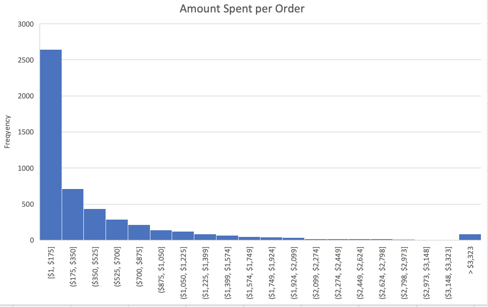

Exploring Sales Performance of Retail Store Chain in Excel
I explored the recent sales performance of a fictional retail store chain to help the company better understand their sales using Microsoft Excel.

The Excel project was done by me, Clay Whipp. It was completed as part of a guided project through Dataquest, an online learning website. You can find the code for the project here.
In this project I explored the sales data of a fictional company called Superstore which has a chain of retail stores. I acted as a an analyst to help the CFO better understand the sales and profitability of the company.
The data is comprised of 3 sheets: orders, people, and returns. Orders provides information for each order, each with an order_id. People provides information about the supervisor for each of the 4 regions: West, East, Central, and South. Returns provides information for each return, each with an order_id.
The first thing I did is merge the data from people and returns into order using VLOOKUP(). I connected the supervisor for each order by using the region. I connected if the return status for each order using the order_id. Now, I had the data from all 3 sheets joined in the order sheet.
Next, I explored the data to better understand it. I found the orders spanned from the start of 2014 to the end of 2017. There are no missing values in the date column, and there appear to be no large date gaps in the data. Between 2014-2017 there was a total of $2.3 million in sales, and $286,000 in sales, meaning there was a 12.5% profit margin.
I then wanted to understand which segment and subcategories contributed the most to profit in the last year of the data, 2017. Using PivotTables, I found that the Consumer segment contributed the most to profit at $45,500. Chairs contributed the most to Furniture subcategory at 8% of total profit, Paper contributed the most to the Office Supplies subcategory at 13% of total profit, and Copiers contributed the most to the Technology subcategory at 27% of total profit.
To better understand Superstore's growth, I used a PivotTable to find that 2016 had the highest growth in sales. In that year, Technology grew the most of of all the categories at a rate of 39%, and made up 37% of total sales.
Next, I wanted to visualize sales over time. I did this by creating a line chart of sales by quarter from 2014-2017. I added a trendline to project future sales.
Sales were strongest in Q3 and Q4 of each year. Q1 2015 was the lowest selling quarter and Q4 2017 was the highest selling quarter. Based on the trendline, I expect sales to continue to increase for Superstore. However, one limitation of the trendline is it doesn't account for seasonality, and the weaker sales in Q1 and Q2.
I then found the company's the average order value (AOV). Using the Analysis Toolpak, I generated summary statistics on sales and found the AOV, or the average amount a customer spent on an order to be $458. This is helpful to know, but I don't know how spread out the data is. So I made a histogram to find the data's distribution.
The orders are not normally distrubted but instead are right-skewed. Most orders are under $175 and the frequency tapers off from there.
I also wanted to see who had more sales between supervisor had a better average sale order in 2017 between Chuck Magee and Kelly Williams. I found Chuck won the competition with an average of $453 versus Kelly's average of $362. I used an independent samples t-test to see if there was a statistically significant difference between their averages. I found a p-value of 0.12, which means the difference isn't statistically significant. However, $90 seems like an important enough difference that the company should know about.
Next, I built a basic financial model to help Superstore's CFO view potential annual bonuses, and the amount of product the company needs to sell to hit it's profit target. I used a two-way Data Table to calculate the company's 2% annual bonus at various annual turnovers (the % of the company's inventory which they sold) and total sales amounts.
The bonuses vary from $1,600 to $4,000.
Finally, using the Goal Seek What-If Analysis I found that Superstore needs to sell 533 rubber chickens in order to make $2,000 in profit if they sell each rubber chicken for $25, and have a 15% profit margin.
In this analysis, I helped the CFO of Superstore, a chain retailer bettwen understand:
- The company's most profitable segment and subcategory
- The year and subcategory with the highest growth in sales
- The company's sales over time as well as predicting where the sales will be in future years
- The average order value and how the order amounts are distributed
- Different annual bonus amounts given a range of different input parameters
This project helped me practice with VLOOKUP(), PivotTables, creating plots, and other features in Excel.